Intern · Bildkonzept · Stand 2026-07-22 · Fotos: Bestand der Bäckerei (Alt-Site)
Bildkonzept: Appetit als Prinzip
Die Bäckerei hat eine echte Reportage-Serie aus der Backstube (2600px), eine Freisteller-Serie
auf Weiß und historische Ladenfotos. Das reicht für eine Vorschau, die nach Ofen riecht.
Regel bleibt: jede Bildfläche hat einen Job, kein Foto ist Deko.
Warmes Licht bewahrenDie Reportage-Fotos haben Backstuben-Wärme. Keine kühle Farbkorrektur, kein Filter.
Hände = HandwerkMenschen bei der Arbeit belegen "von Hand". Mindestens ein Hände-Bild pro Seite.
Ein Appetit-Band pro SeiteGenau EIN full-bleed Foto-Moment je Seite (Bakeat-Mechanik), sonst Container.
Freisteller für KlarheitProdukt auf Weiß für Hero + Sortiment (Luna-Rossa-Mechanik mit handschriftlicher Notiz).
Seite: Start
Start
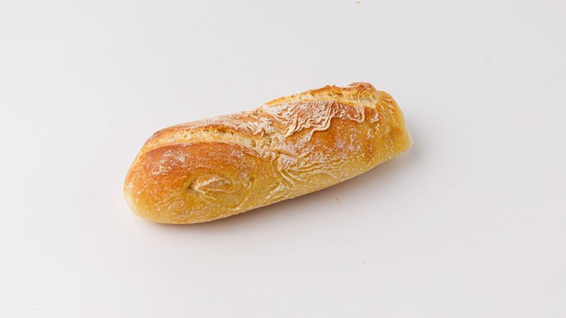
Hero · Freisteller + NotizSplitterbrötchen freigestellt, handschriftlich: "Sauerteig. 16 Stunden." Alternativ Brötchen/Kümmelstange als Trio.
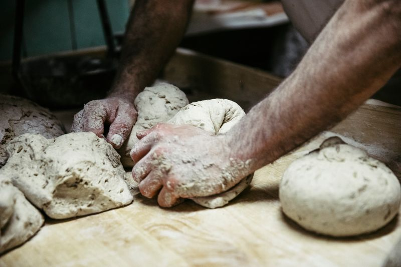
Handwerk 01 · Slide-inHände im Teig, Mehlstaub. Das "abends angesetzt"-Bild.
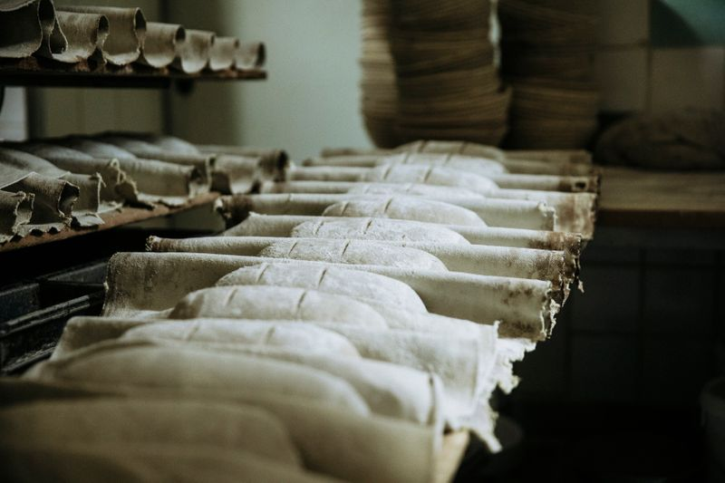
Handwerk 02 · Slide-inLaibe in Gärtüchern, die Nacht-Reife.
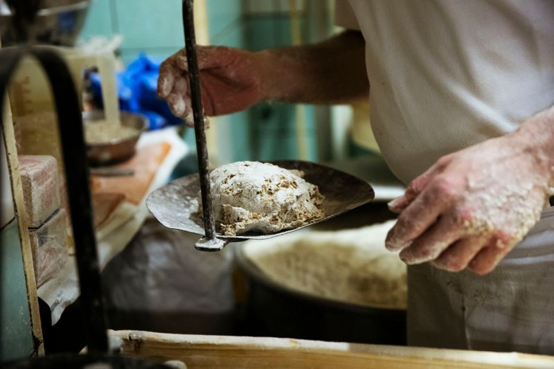
Handwerk 03 · Slide-inBrotschieber am Ofen, das "morgens von Hand".
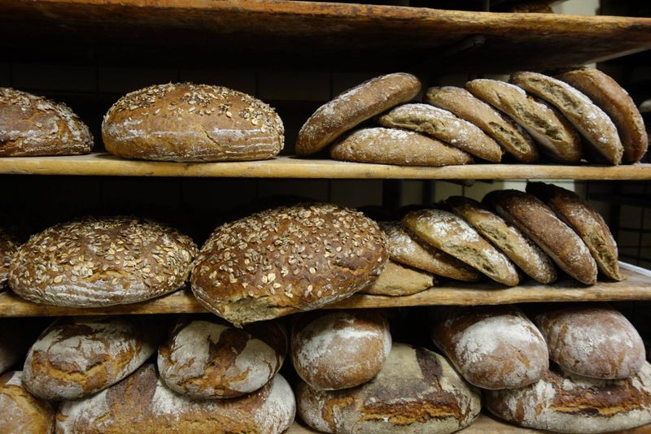
Appetit-Band · full-bleedVolles Brotregal vor dem Sortiment-Teaser. DER Mengen-Beweis.
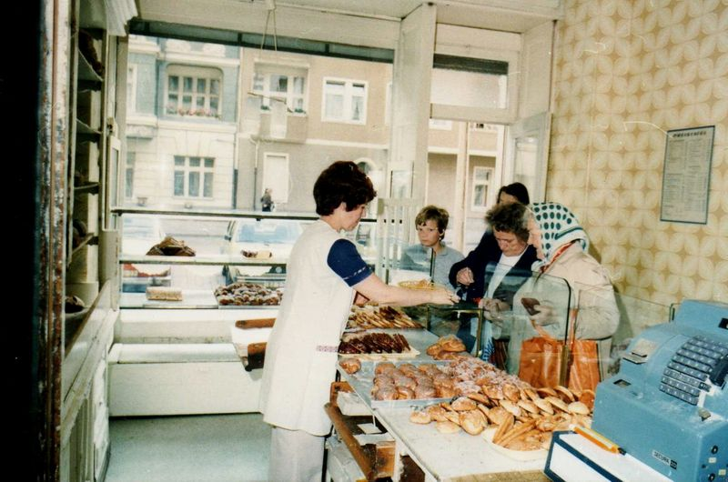
Zeitband-StationHistorisches Ladenfoto für die mittlere Station.
Seite: Geschichte
Geschichte
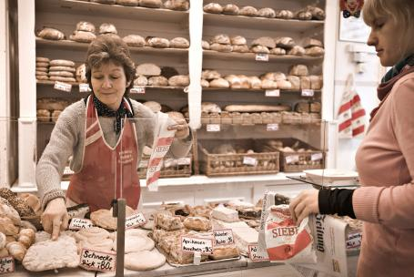
Der Ort · Zoom-out-RevealTheke früher. Daneben im Build: gleiche Perspektive heute. OFFEN: aktuelles Ladenfoto fehltDer OrtLaden mit Kundschaft, 70er.
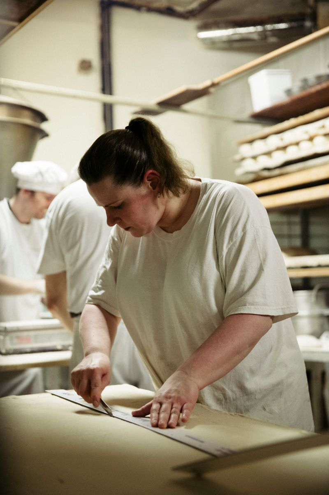
Die FamilieOFFEN: Ist das Anke Siebert? Wenn ja: DAS Bild der 5. Generation (lebend, arbeitend, kein Gemälde).
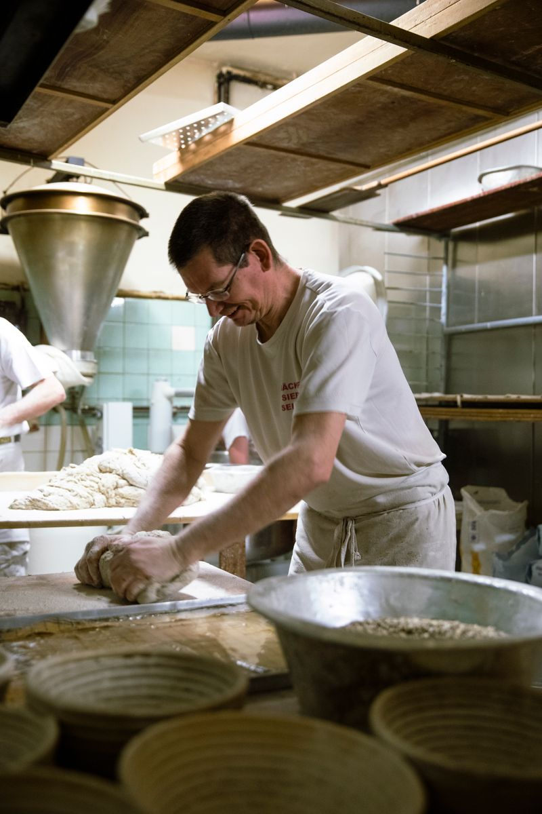
Die FamilieOFFEN: Ist das Lars Siebert? Kandidat für die 4. Generation.
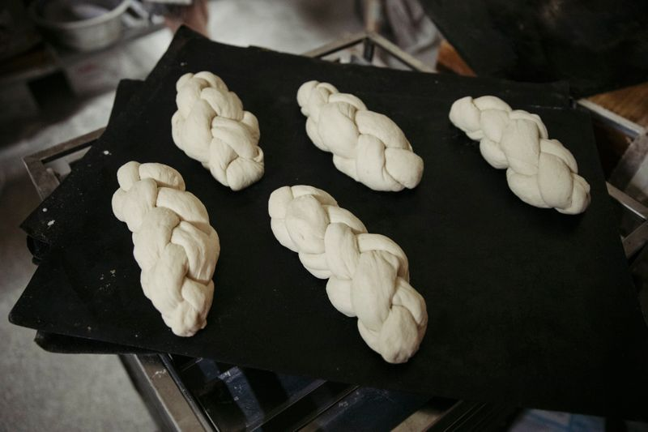
Die Auszeichnung · Appetit-BandZöpfe auf schwarzem Blech, die Feinschmecker-Sektion braucht das beste Food-Bild.
Seite: Sortiment
Sortiment
Preistafel bleibt Text (Tradition!), aber jede Warengruppe bekommt ein Anker-Bild.
Die 64a7e-Freisteller-Serie hat 16 Motive, für den Build alle sichten.
Brote · Gruppen-AnkerRegal voller Laibe.
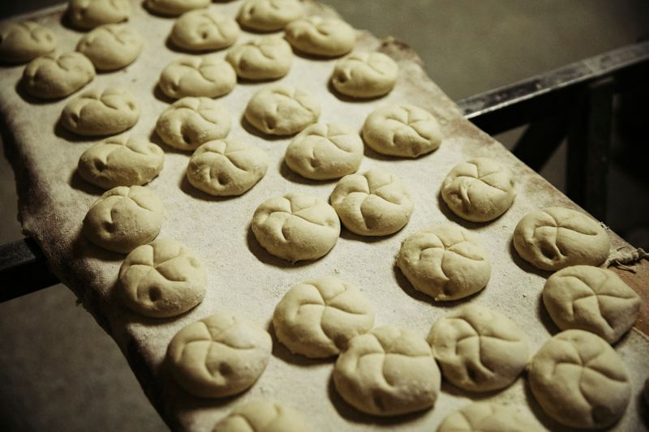
Brötchen · Gruppen-AnkerRohe Schlingen auf dem Blech, Steinplatten-Story.
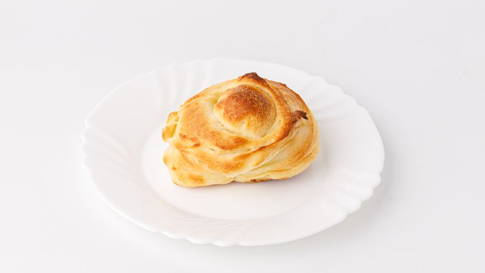
Kuchen · Gruppen-AnkerSchnecke freigestellt; Alternative aus 64a7e-Serie sichten.
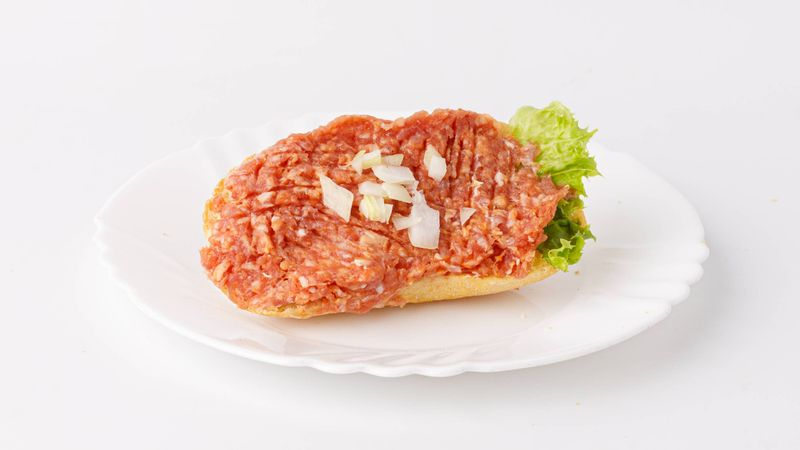
Belegtes · kleinMettbrötchen auf Teller, ehrlicher Ost-Berlin-Klassiker.
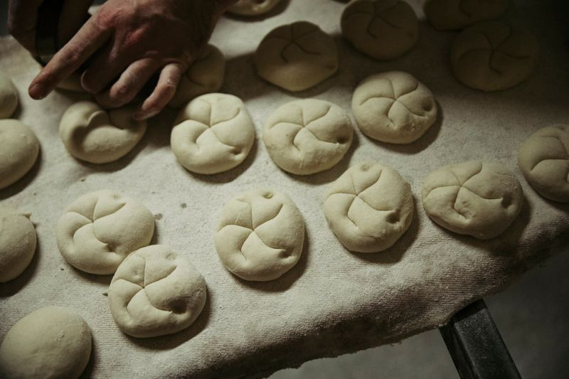
Appetit-Band · full-bleedHand formt Schlingen, Bewegung im Bild.
Seite: Torten
Torten
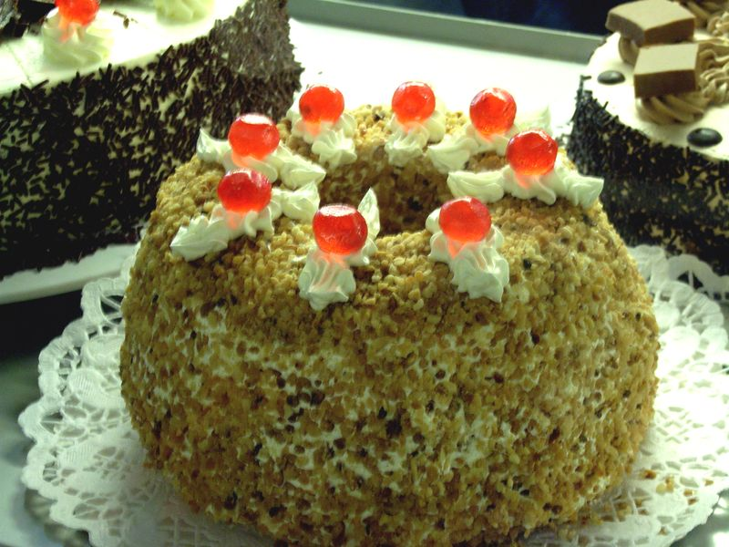
Klassiker-KarteFrankfurter Kranz. Qualität mittel, klein einsetzen.
Tortenfotos sind die schwächste Gruppe (Blitzlicht, klein). Für die Vorschau reichen sie
in Kartengrösse. Im Kundengespräch: Mini-Shooting als Upsell anbieten, die Backstuben-Serie
beweist ja, was gute Fotos hier hergeben.
Seite: Ausbildung
Ausbildung
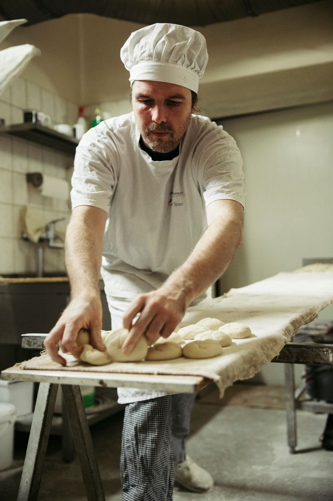
Hero-BildKonzentration am Teig, echtes Team statt Stock-Azubis.
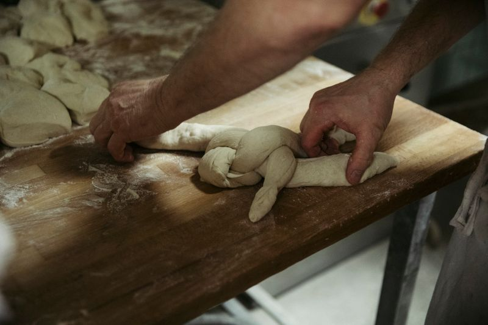
Beruf Bäcker/inHandgriff beim Formen, das lernt man hier.
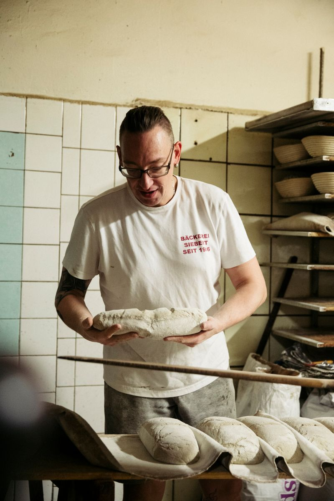
Beruf/BenefitsBäcker mit Laib, T-Shirt "Bäckerei Siebert" als natürliches Branding.
Seite: Besuch
Besuch
Stimmung kleinBackstube als Einstimmung neben den Zeiten.
Für Besuch + OG-Bild fehlt ein aktuelles Aussenfoto der Ladenfront (Fundus hat nur
historische). Entweder beim Kunden anfragen oder vor Ort fotografieren, Schönfließer
Straße 12 ist eine kurze Fahrt.
Quellen + Original-URLs in 2600px: _src/bilder-alt/MANIFEST.md · Rechte: Fotos der Bäckerei, Vorschau bleibt privat/noindex bis zum Deal